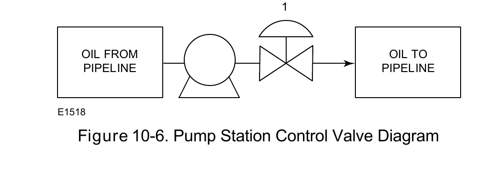
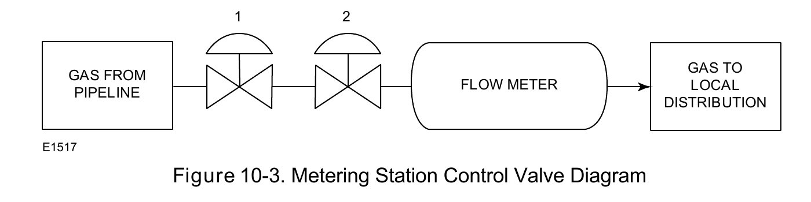

Pipeline-Network Application
Pump station

Duty defined by the pipeline's own pressure profile
Metering station

Duty defined by measurement accuracy, not pressure
Fisher Control Valve Sourcebook — Oil & Gas (© 2013 Fisher), Chapter 10 "Oil and Gas Transportation," Figure 10-6 (drawing number E1518, printed p. 10-4) — "Figure 10-6. Pump Station Control Valve Diagram." — used directly. Component Index: ogas-cmp-pump-station-control-valve-diagram, ogas-cmp-metering-station-control-valve-diagram.